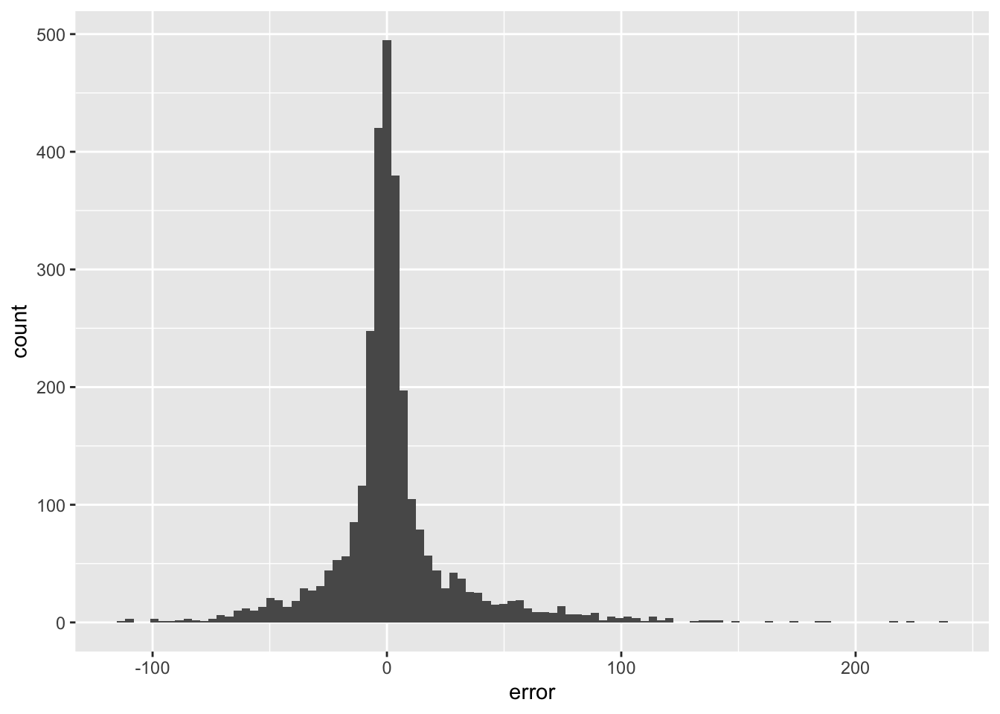
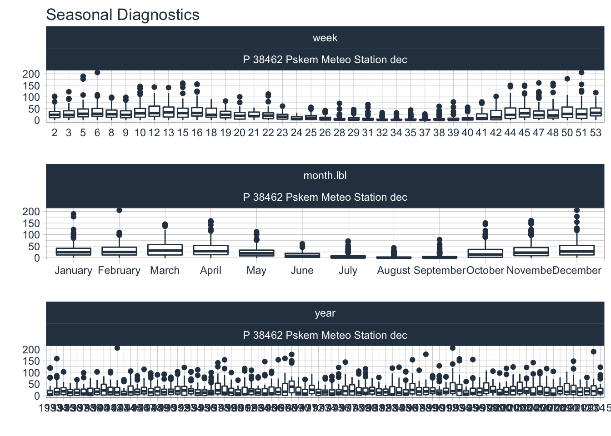
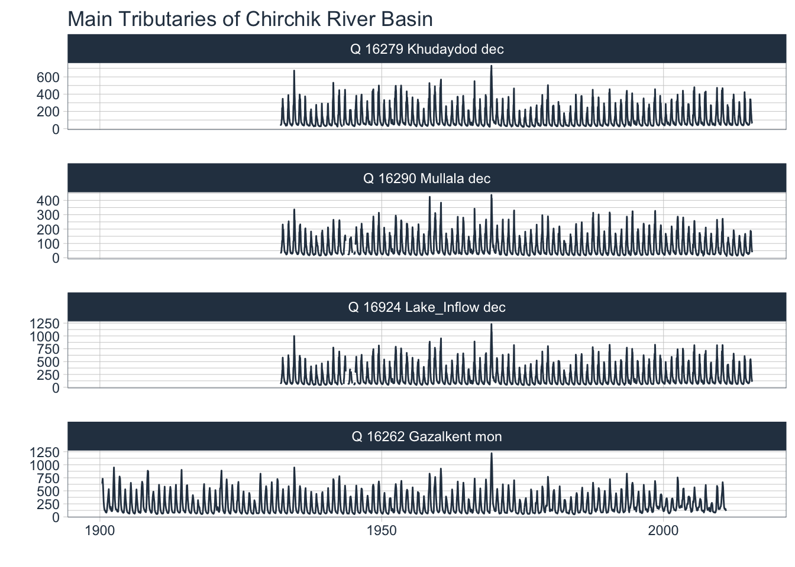

Chapter 9 Hydrological Modeling: Empirical Models
9.1 Background on Empirical Modeling
9.2 Key Forecasting Techniques
feature engineering
experimentation and ensembling
Knowledge of key events, i.e. date shifts holidays
Deep learning (data permitting)
Boosting errors
9.3 Getting Started
9.3.1 Loading the Required Packages and Data
In a first step, we load all packages that are required in this Chapter to perform the analysis. Note that RStudio informs you if you have some of the packages not yet installed. If that is the case, you should click choose to install the suggested package by clicking Install.
# * Course data ----
devtools::install_github("hydrosolutions/riversCentralAsia")
library(riversCentralAsia)
# * Forecasting Libraries ----
library(forecast) # Auto ARIMA, ETS
library(rstan)
library(prophet) # FB Prophet
# * Machine Learning Libraries ----
library(glmnet) # Elastic Net
library(earth) # Mars Regression Splines
library(kernlab) # Support Vector Machine
library(kknn) # K-Nearest Neighbors
library(randomForest) # Random Forest
library(ranger) # Random Forest
library(xgboost) # Boosted Trees
library(Cubist) # Cubist Rule-Based Algorithm
# * Deep Learning Libraries ----
library(reticulate) # Python interface
# * Time Series ML ----
library(tidymodels) # Meta - workflows, parsnip, tune, dials, recipes, rsample, yardstick
library(rules) # Rule-based models (cubist)
library(modeltime) # tidymodels time series extension
library(modeltime.ensemble) # this is for ensemble modeling
# * Core Libraries ----
library(tidyverse) # Meta - dplyr, ggplot2, purrr, tidyr, stringr, forcats
library(lubridate) # date and time
library(timetk) # Time series data wrangling, visualization and preprocessing
# Extras
library(DataExplorer)
library(fs)
# Kntting tables
library(knitr)The riversCentralAsia Package makes selected data of the Chirchik River Basin available. These include discharge and meteorological data from the basin. Once this package is loaded, we are ready to start with data analysis.
ChirchikRiverBasin # load data## # A tibble: 29,244 x 14
## date data norm units type code station river basin resolution
## <date> <dbl> <dbl> <chr> <fct> <fct> <chr> <chr> <chr> <fct>
## 1 1932-01-10 48.8 38.8 m3s Q 16279 Khuday… Chat… Chir… dec
## 2 1932-01-20 48.4 37.5 m3s Q 16279 Khuday… Chat… Chir… dec
## 3 1932-01-31 42.4 36.6 m3s Q 16279 Khuday… Chat… Chir… dec
## 4 1932-02-10 43.7 36.4 m3s Q 16279 Khuday… Chat… Chir… dec
## 5 1932-02-20 44.2 36.3 m3s Q 16279 Khuday… Chat… Chir… dec
## 6 1932-02-29 47.7 36.9 m3s Q 16279 Khuday… Chat… Chir… dec
## 7 1932-03-10 54.1 39.4 m3s Q 16279 Khuday… Chat… Chir… dec
## 8 1932-03-20 63.2 47.6 m3s Q 16279 Khuday… Chat… Chir… dec
## 9 1932-03-31 103 60.5 m3s Q 16279 Khuday… Chat… Chir… dec
## 10 1932-04-10 103 86.4 m3s Q 16279 Khuday… Chat… Chir… dec
## # … with 29,234 more rows, and 4 more variables: lon_UTM42 <dbl>,
## # lat_UTM42 <dbl>, altitude_masl <dbl>, basinSize_sqkm <dbl>?ChirchikRiverBasin
data <- ChirchikRiverBasinTo get more information about the data, simply call the package data help documentation.
?ChirchikRiverBasin9.4 Exploratory Data Analysis & Data Preparation
9.4.1 Discharge Data
There are 6 discharge stations where type = Q. These are all unique stations as can be identified by their stations codes (see above in Figure 4.1 for the station locations.
We can generate timeseries plots of the river discharge data only by setting the corresponding station filter via filter(type=='Q').
data %>% filter(type=='Q') %>% group_by(type,code,station,resolution) %>% plot_time_series(date,data,.facet_ncol = 2,.interactive = FALSE, .smooth = FALSE, .title = 'Available discharge data of Chirchik River Basin')
The characteristics of the timeseries feature the typical snowmelt-driven runoff pattern with pronounced seasonality and internannual variability. At Chinaz near the confluence of the Chirchik River with the Syr Darya, however, a changing discharge regime can easily be identified over time. The drastic decrease in discharge in the 1960ies is due to the extension of upstream irrigation and increases in interbasin water transfers. This timeseries is non-stationary for this reason and unless we not also understand the changing allocation patterns between Charvak reservoir and Chinaz gauge, it will not be possible to forecast the flow there.
Getting summary statistics of the gauged discharges allows us to quickly understand runoff contributions of the individual tributaries.
data %>% filter(type == 'Q') %>%
dplyr::select(date,data,code) %>% group_by(code) %>%
summarise(mean = mean(data,na.rm=TRUE),
min = min(data,na.rm=TRUE),
max = max(data,na.rm=TRUE),
sd = sd(data,na.rm=TRUE))## `summarise()` ungrouping output (override with `.groups` argument)Chapter 10 A tibble: 7 x 5
code mean min max sd
2 16290 79.4 12.7 438 69.3
3 16924 205. 40.7 1231 183.
4 16298 3.79 0.9 21.1 2.78
5 16300 22.4 3.9 114 19.3
6 16275 105. 1.2 912 121.
7 16262 229. 48.7 1220 186.
The timeseries for the two main tributaries, i.e. the Pskem River (Gauge 16290) and the Chatkal River (Gauge 16279) are almost complete decadal records from 1933 until and including 2015.
We can easily get summary statistics of one discharge station by first filtering and then summarizing. The example below shows the code for Gauge 16279 at Khudaydod located in the Chatkal River Basin.
data %>% filter(type=='Q', code=='16279') %>% summary()## date data norm units
## Min. :1932-01-10 Min. : 21.1 Min. : 36.33 Length:3024
## 1st Qu.:1953-01-07 1st Qu.: 42.2 1st Qu.: 43.01 Class :character
## Median :1974-01-05 Median : 61.8 Median : 60.49 Mode :character
## Mean :1974-01-04 Mean :115.7 Mean :115.32
## 3rd Qu.:1995-01-02 3rd Qu.:154.0 3rd Qu.:174.07
## Max. :2015-12-31 Max. :729.0 Max. :327.52
## NA's :15
## type code station river
## Q:3024 16279 :3024 Length:3024 Length:3024
## P: 0 16290 : 0 Class :character Class :character
## T: 0 16924 : 0 Mode :character Mode :character
## 16298 : 0
## 16300 : 0
## 16275 : 0
## (Other): 0
## basin resolution lon_UTM42 lat_UTM42 altitude_masl
## Length:3024 dec:3024 Min. :598278 Min. :4596628 Min. :953
## Class :character mon: 0 1st Qu.:598278 1st Qu.:4596628 1st Qu.:953
## Mode :character Median :598278 Median :4596628 Median :953
## Mean :598278 Mean :4596628 Mean :953
## 3rd Qu.:598278 3rd Qu.:4596628 3rd Qu.:953
## Max. :598278 Max. :4596628 Max. :953
##
## basinSize_sqkm
## Min. :5678
## 1st Qu.:5678
## Median :5678
## Mean :5678
## 3rd Qu.:5678
## Max. :5678
## =====
All discharge timeseries except the one at Chinaz look regular in the sense that they are not influenced by human activity. In all cases, significant interannual variability is visible. At Chinaz, however, it can be clearly seen that the discharge regime is changing from the 1960ies onward because of the increase of irrigation and interbasin water transfer between Charvak Reservoir and the confluence with the Syr Darya.
Let us focus for the time being for the hydrological situation above Charvak dam. The reservoir receives data from different tributaries, including from Nauvalisoy, Pskem, Koksu and Chatkal rivers. All of them are gauged except Koksu River, i.e. the small catchment between Pskem and Chatkal rivers. Its contribution to runoff is estimated using an empirical relationship that was established prior to the closure of the dam. At that time, Charvak gauge was still in operation where total discharge of the Chatkal River was measured, including the one from Koksu. Hence,
\[ Q_{Koksu} \propto Q_{Charvak Gauge} - Q_{16279} \]
The relationship was estimated using daily data over three years.
is estimated through previously established empirical relationships between Chatkal dicharge
For the time being, we want to focus on the zone of runoff formation and on the two main tributaries of the Chirchik River, i.e. the Chatkal and Pskem Rivers. Let us plot the two timeseries, including also the discharge data at the Charvak Reservoir at Gauge 16294.
After the completion of the Charvak Reservoir dam in 1970, the original gauge got flooded and its discharge is since computed using correlations with
including also their seasonal diagnostics in the following way.
data %>% filter(type=='Q',code!=16298,code!=16275,code!=16300,code!=16294) %>% group_by(type,code,station,resolution) %>% plot_time_series(date,data,.facet_ncol = 1,.interactive = FALSE, .smooth = FALSE, .title = 'Main Tributaries of Chirchik River Basin')
As is easily visible, we have a near complete record of 84 years of decadal data available for these two stations starting from 1932 until and including 2015.
data %>% filter(type=='Q',code!=16298,code!=16275,code!=16300,code!=16294) %>% group_by(type,code,station,resolution) %>% plot_seasonal_diagnostics(date,data,.interactive = FALSE,.feature_set = c("week","month.lbl","year"))
The summer peak discharge in the Chatkal River is, on average, 3 weeks earlier in the summer season because of the different altitude zonation and characteristics of the two catchments (see also Chapter 2 for more details).
10.0.1 Meteorological Data
For meteorological data, we have precipitation P and temperature T data from two stations, i.e. Pskem Meteo Station, Chatkal Meteo Station. For the station at the Charvak Reservoir, we only have precipitation data.
data %>% filter(type!='Q') %>% group_by(type,code,station,resolution) %>% plot_time_series(date,data,.facet_ncol = 1,.interactive = FALSE,.smooth = FALSE)
data %>% filter(type=='P',code==38462) %>% group_by(type,code,station,resolution) %>% plot_seasonal_diagnostics(date,data,.interactive = FALSE,.feature_set = c("week","month.lbl","year"))## Warning: Removed 111 rows containing non-finite values (stat_boxplot).